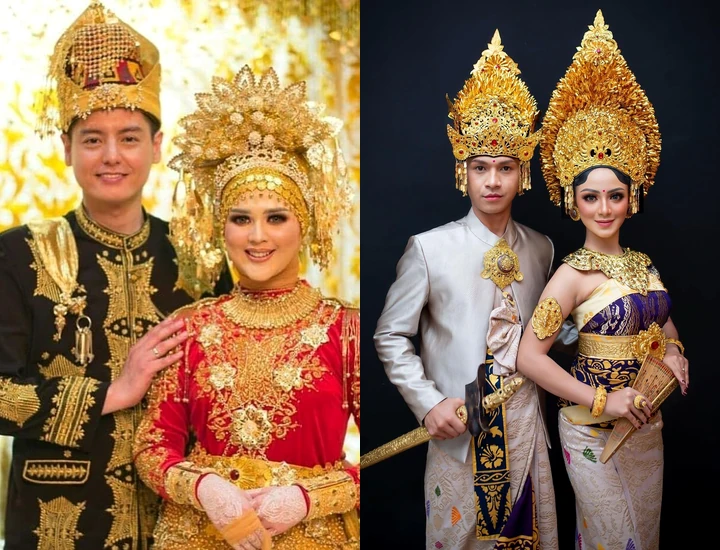

01
Mengenal pakaian adat
Peserta didik dapat mengidentifikasi nama dan daerah asal pakaian adat di Indonesia melalui permainan mencocokkan gambar pakaian adat pada game edukasi dengan tepat minimal 12 dari 15 pakaian adat.
Target: 12 dari 15 pakaian adat